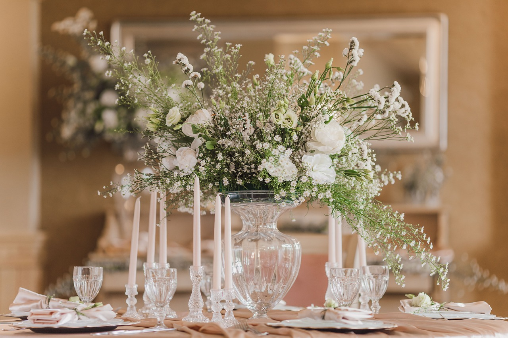
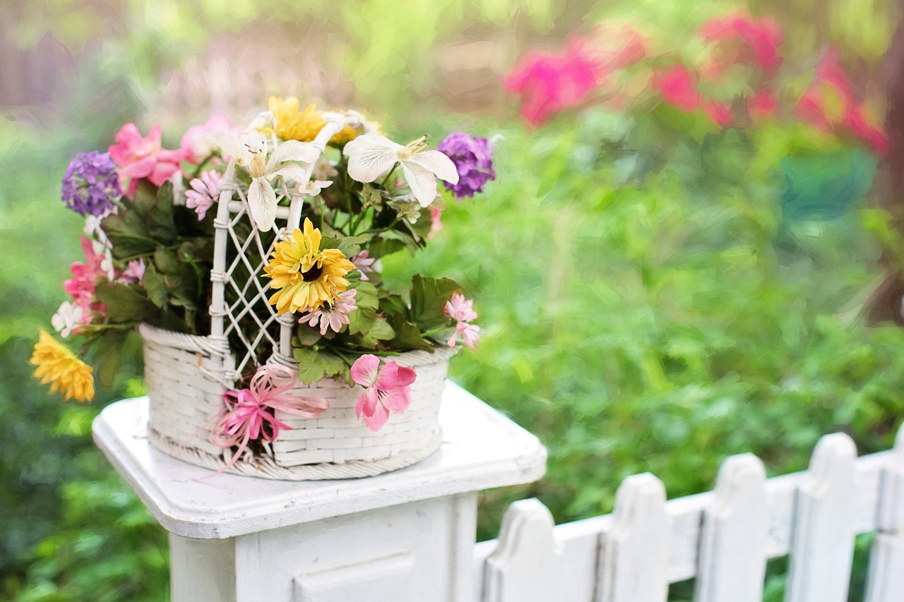
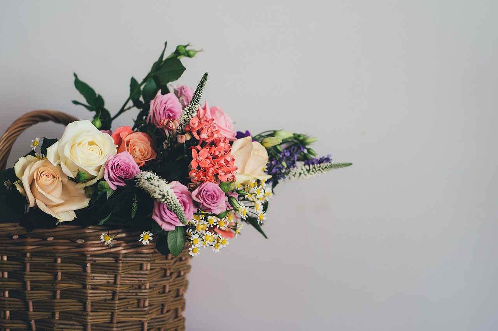

Sobre a Loja
A pequena floricultura é mais do que um simples comércio. Ela é um ponto de encontro para a comunidade, onde vizinhos se encontram para trocar histórias, compartilhar sorrisos e celebrar ocasiões especiais. Dona Helena não apenas vende flores; ela compartilha o amor e a paixão que tem por elas, transmitindo seu conhecimento sobre cuidados e arranjos florais a todos que entram em sua loja.
Produtos
-

Arranjo de Mesa
Arranjo de mesa branco, com rosas brancas.
-

Buquê
Buque de flores roxas e talos cobertos com tecido.
-

Cesta Vintage
Cesta vintage branca com flores de varias cores.
-

Cesta Rustica
Cesta rustica com flores roxas e folhas verdes.